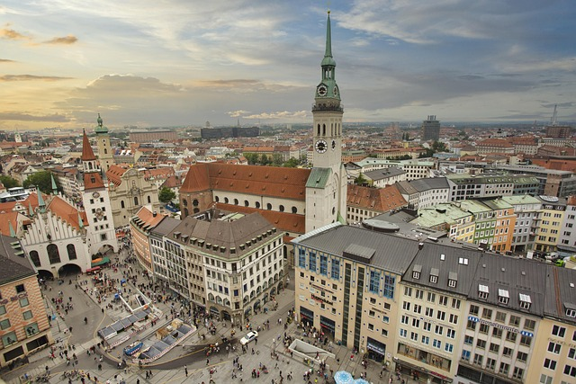

Photo Walk Through the Old Town

Join us for a relaxed walk through the old town in the late afternoon light. We stop at a few spots with great views and share tips on composition and light. Any camera works, including your smartphone.
Details
- Date
- Meeting point
- Marienplatz, in front of the town hall
- Organizer
- Shutter Society
- Spots
- 20 (8 left)